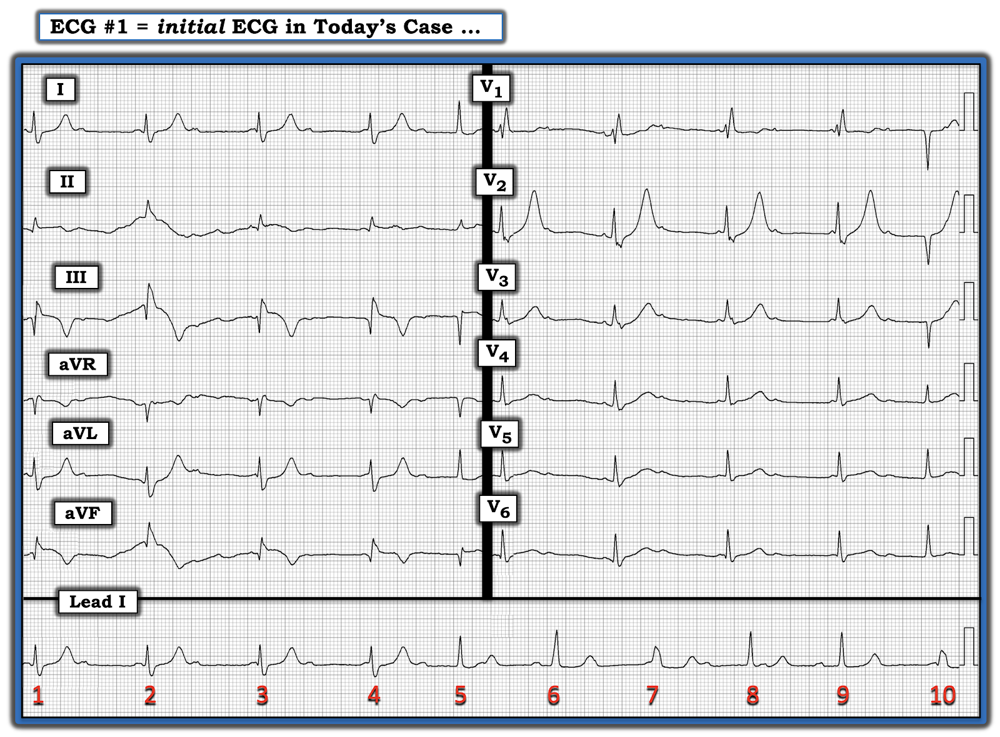
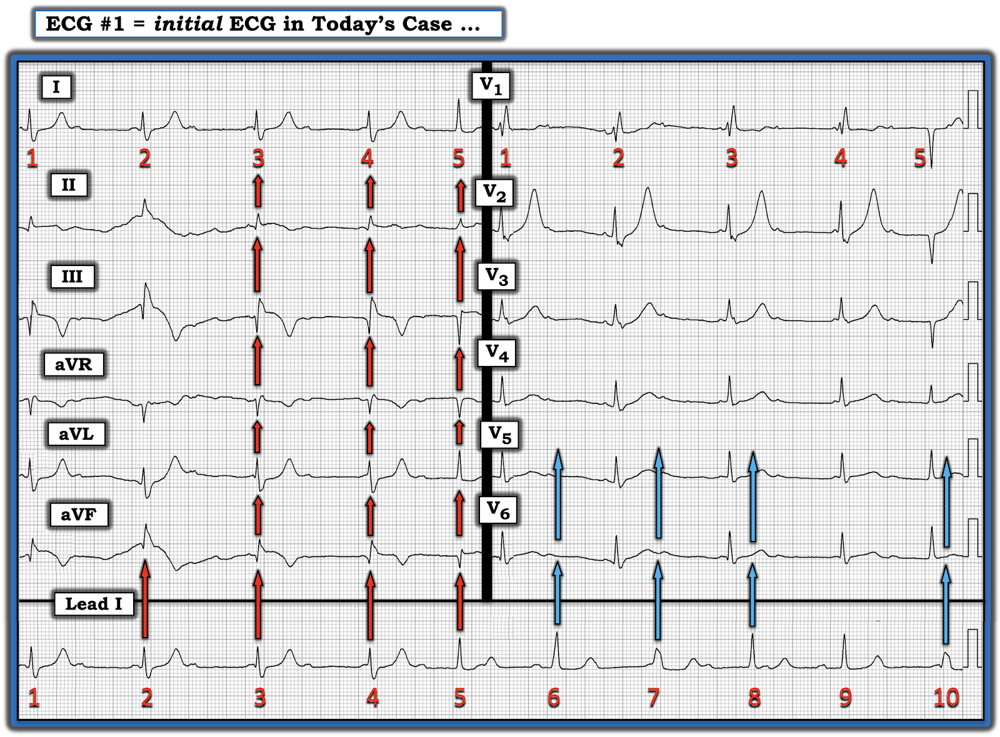
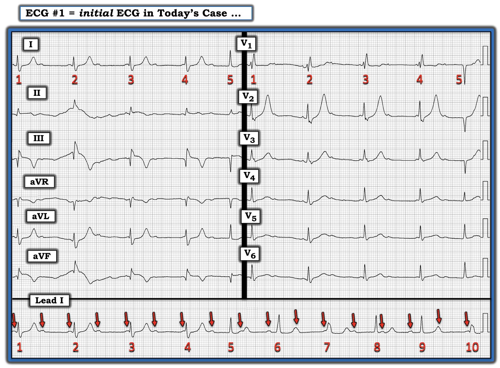
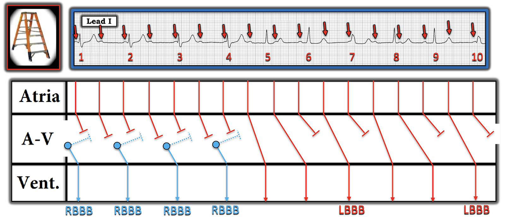

ECG Blog #304 — Đây là loại nhịp gì?
Ca bệnh hôm nay:
Điện tâm đồ 12 chuyển đạo và dải nhịp chuyển đạo I dài trong Hình-1 — được ghi ở một phụ nữ 65 tuổi đến ED (khoa Cấp cứu — Emergency Department) với bệnh sử đau ngực 1 ngày. Cơn đau ngực của bà đã hết vào thời điểm ghi điện tâm đồ trong Hình-1.
CÂU HỎI:
- BẠN sẽ diễn giải nhịp và điện tâm đồ 12 chuyển đạo này như thế nào?
- Theo bạn, điều gì có thể đã xảy ra?
- Điểm cộng: Vì sao diễn giải bản ghi này lại khó đến vậy? GỢI Ý: Câu trả lời liên quan đến cách thức kỹ thuật ghi bản ghi này.


VÌ SAO diễn giải bản ghi này lại khó đến vậy?
Có nhiều lý do góp phần khiến việc diễn giải bản ghi hôm nay khó đến vậy:
- Trước hết, nhìn vào dải nhịp chuyển đạo I dài ở cuối bản ghi — Lưu ý rằng hình dạng QRS thay đổi nhiều lần! Để xác định VÌ SAO lại như vậy — chúng ta cần xem được bản ghi đồng thời ở các chuyển đạo khác. Nhưng thực tế là không phải tất cả các phức bộ QRS trong dải nhịp chuyển đạo I dài đều thẳng hàng theo chiều dọc (tức là nằm ngay bên dưới các nhát tương ứng trong bản ghi 12 chuyển đạo) — loại bỏ khả năng dùng thêm các chuyển đạo khác để giúp xác định nguyên nhân của mọi nhát trong chuyển đạo I dài.
Khái niệm này dễ hiểu nhất khi nhìn vào các mũi tên màu trong Hình-2:
- Kỹ thuật được dùng để ghi điện tâm đồ trong ca hôm nay là hiển thị 5 nhát đầu tiên của bản ghi hai lần! Để minh hoạ điều này — tôi đã đánh số các nhát từ #1 đến 5 ở 6 chuyển đạo chi. Chính 6 nhát này lại được hiển thị một lần nữa ở 6 chuyển đạo trước tim.
- "Ưu điểm" của kỹ thuật này — là chúng ta được thấy 5 nhát đầu tiên trong bản ghi hôm nay trông như thế nào ở từng chuyển đạo trong 12 chuyển đạo (tức là các mũi tên ĐỎ thẳng đứng trong Hình-2 cho thấy 5 nhát đầu tiên trong dải nhịp chuyển đạo dài được ghi đồng thời với 6 chuyển đạo chi).
- Tuy vậy — nhược điểm của kỹ thuật này là: i) Chúng ta chỉ thấy 5 nhát đầu tiên trông như thế nào ở các chuyển đạo khác (tức là chúng ta hoàn toàn không biết các nhát #6 đến 10 trong dải nhịp chuyển đạo I dài trông như thế nào ở các chuyển đạo khác); và, ii) Phần thứ 2 của dải nhịp chuyển đạo dài không được ghi đồng thời với các chuyển đạo trước tim (các mũi tên XANH thẳng đứng trong Hình-2 không thẳng hàng với 5 phức bộ QRS ở các chuyển đạo trước tim).
- Điểm MẤU CHỐT: Chính vì hình dạng QRS thay đổi nhiều lần trong dải nhịp chuyển đạo I dài — nên việc ghi đồng thời ở các chuyển đạo khác là thiết yếu để xác định nguyên nhân của các nhát #6, 7 và 10! Nhưng vì chúng ta hoàn toàn không biết các nhát này trông như thế nào ở các chuyển đạo trước tim khác — tôi đơn giản là không thể chắc chắn liệu nhát #6 có phải là nhát hỗn hợp (fusion beat)? — cũng như liệu các nhát #7 và 10 phản ánh dẫn truyền lệch hướng do nhịp chậm hay nhịp thoát thất?
- ĐIỂM THEN CHỐT (PEARL) #1: Một trong những công cụ giá trị nhất trong diễn giải loạn nhịp nâng cao đối với các bản ghi phức tạp là sử dụng các chuyển đạo được ghi đồng thời — cho phép chúng ta đánh giá các nhát khó trong dải nhịp chuyển đạo dài bằng cách so với hình dạng của chúng ở các chuyển đạo khác của bản ghi 12 chuyển đạo. Điều quan trọng là nhận ra kỹ thuật dùng để ghi bản ghi hôm nay đã tước đi của chúng ta công cụ này như thế nào.


Vậy nhịp trong bản ghi hôm nay là gì?
Dù biết rằng việc thiếu một dải nhịp chuyển đạo dài được ghi đồng thời khiến không thể đánh giá chính xác mọi biến đổi của hình dạng QRS — vẫn có những điều nhất định chúng ta có thể nói về nhịp trong bản ghi hôm nay:
- Có sóng P xoang! Dù biên độ nhỏ — và bị che khuất một phần ở một số đoạn của dải nhịp chuyển đạo dài — việc dùng compa đo (calipers) cho phép tôi "dò bước" (walk out) các sóng P xoang xuất hiện đều đặn với tần số ~100/phút (các mũi tên ĐỎ trong Hình-3).
- ĐIỂM THEN CHỐT (PEARL) #2: Với một bản ghi phức tạp như thế này — hãy BẮT ĐẦU bằng cách xem những nhát trong nhịp dễ diễn giải nhất. Để dành các phần khó hơn của bản ghi đến CUỐI CÙNG.
- Các nhát #5, 8 và 9 hẹp. Các nhát này rõ ràng là trên thất.
- Nhát #6 cũng hẹp — dù cao hơn và rộng hơn một chút so với các nhát #5,8,9. Tôi nghi ngờ nhát #6 cũng là trên thất, có lẽ kèm dẫn truyền lệch hướng hoặc hỗn hợp một phần (tức là để giải thích kích thước hơi lớn hơn của nó so với các nhát #5,8,9).
- Các nhát #1, 2, 3 và 4 đều có cùng hình dạng QRS. Sóng R hẹp khởi đầu (với độ dốc và hướng của phần đầu QRS tương tự như ở các nhát #5,8,9 trong dải nhịp chuyển đạo dài) — cùng với sóng S rộng ở phần cuối — gợi ý rằng các nhát #1,2,3,4 là trên thất với dẫn truyền RBBB.
- LƯU Ý: Khoảng R-R không đổi với 4 nhát đầu tiên này trong Hình-3 (tức là khoảng R-R ~6 ô lớn, tương ứng với tần số là ~50/phút). Tuy nhiên, khoảng PR thay đổi liên tục ở 4 nhát đầu tiên này — và không sóng P nào (mũi tên ĐỎ) có cơ hội dẫn truyền. Điều này gợi ý có phân ly nhĩ thất (AV dissociation) (tức là không dẫn truyền) đối với các sóng P nằm trong 4 nhát đầu tiên này — với tần số "thoát" bộ nối phù hợp là ~50/phút.
- ĐIỂM THEN CHỐT (PEARL) #3: Một trong những manh mối TỐT NHẤT cho thấy blốc AV không hoàn toàn — là khi bạn thấy một phức bộ trên thất xuất hiện sớm hơn dự kiến! Lưu ý rằng so với khoảng R-R của 4 nhát đầu tiên trong bản ghi — nhát #5 xuất hiện sớm hơn dự kiến! Điều này gợi ý mạnh mẽ rằng nhát #5 đang được dẫn truyền!
- Giờ khi đã biết nhát #5 đang được dẫn truyền — Lưu ý rằng khoảng PR của nhát #5 dài! (tức là khoảng 400 msec.). Như vậy, có blốc AV độ 1 rõ rệt ở nhát được dẫn truyền này!
- Ngoài ra — Vì nhát #5 đang được dẫn truyền — mức độ blốc AV trong Hình-3 không hoàn toàn (tức là Đây không phải blốc AV độ 3). Nhưng vì một số sóng P rõ ràng không được dẫn truyền — nhịp trong Hình-3 hẳn phải là một dạng nào đó của blốc AV độ 2.
=========================
LƯU Ý: Nếu bạn giống tôi — hẳn bạn đã kịp "liếc qua" điện tâm đồ 12 chuyển đạo. Nếu vậy — có lẽ bạn đã nhận thấy dấu hiệu gợi ý MI thành dưới gần đây (nếu không phải là cấp).
- ĐIỂM THEN CHỐT (PEARL) #4: Trong các loại blốc AV độ 2 — Mobitz I phổ biến hơn nhiều so với Mobitz II (tức là Theo kinh nghiệm của tôi — hơn 90-95% tổng số blốc AV độ 2 là Mobitz I). Và NẾU (như chúng ta thấy trong ca hôm nay) — bệnh nhân của bạn có: i) Phức bộ QRS hẹp ở các nhát được dẫn truyền; ii) Khoảng PR dài ở các nhát được dẫn truyền; và, iii) Bằng chứng nhồi máu thành dưới gần đây hoặc cấp — thì gần như chắc chắn rằng loại blốc AV độ 2 sẽ là Mobitz I ( = Wenckebach AV).
BÌNH LUẬN của tác giả: Để tiết kiệm thời gian — tôi tạm ngừng việc đánh giá nhịp tại điểm này, để xem kỹ hơn phần còn lại của bản ghi 12 chuyển đạo.
- Tôi làm vậy vì: i) Tôi đã xác lập được khả năng cực kỳ cao là có một loại Wenckebach độ 2 nào đó; và, ii) Bản ghi này đủ phức tạp để tôi biết mình sẽ cần thêm "chút thời gian" để vẽ một giản đồ bậc thang (laddergram) nếu muốn xác định chính xác hơn cơ chế khả dĩ của rối loạn nhịp.
XIN NHẤN MẠNH: Bạn không cần biết chính xác cơ chế của mọi rối loạn nhịp gặp phải thì mới biết cách xử trí bệnh nhân.
- Chỉ cần nhận ra có một loại blốc AV độ 2 nào đó, mà có lẽ là một dạng Wenckebach (theo Pearl #4) — là quá đủ trong ca hôm nay để bắt đầu xử trí phù hợp.
- Sử dụng giản đồ bậc thang là một cách tuyệt vời để minh hoạ cơ chế của các rối loạn nhịp phức tạp. Tuy vậy — trừ những rối loạn nhịp cực kỳ phức tạp, tôi chỉ hiếm khi cần vẽ giản đồ bậc thang để diễn giải một nhịp.
- Với ai quan tâm — tôi minh hoạ từng bước cách hiểu (và/hoặc vẽ) Giản đồ bậc thang trong ECG Blog #188 (bao gồm các đường link tới hơn 50 ví dụ giản đồ bậc thang lâm sàng có giải thích mà tôi đã vẽ).


SUY NGHĨ CỦA TÔI về Điện tâm đồ 12 chuyển đạo:
Hãy quay lại Hình-3 — với mục tiêu đánh giá những gì đang diễn ra ở phần còn lại của bản ghi 12 chuyển đạo này ở phụ nữ 65 tuổi có bệnh sử 1 ngày đau ngực.
- Có sóng Q lớn, kèm ST chênh lên rõ và sóng T đảo ngược sâu ở chuyển đạo III và aVF. Những dấu hiệu tương tự nhưng ít rõ hơn dường như cũng có ở chuyển đạo dưới thứ 3 ( = chuyển đạo II) — dù nhiễu nhiều và biên độ nhỏ của phức bộ QRST ở chuyển đạo II khiến chuyển đạo này khó đánh giá hơn.
- Lưu ý hình dạng đối nghịch như soi gương của sóng ST-T ở chuyển đạo III và chuyển đạo aVL. Hình ảnh của 4 chuyển đạo chi này (tức là các chuyển đạo II, III, aVF; và chuyển đạo aVL) — khẳng định một STEMI thành dưới gần đây (nếu không phải là cấp).
- Làm phức tạp thêm việc đánh giá bản ghi hôm nay — là dẫn truyền RBBB ở 4 nhát đầu tiên (tức là phức bộ rSR' ba pha điển hình như thấy ở chuyển đạo V1 — kèm sóng S rộng ở phần cuối của 4 nhát này ở các chuyển đạo bên I và V6).
- Ở các Chuyển đạo trước tim — hình dạng sóng ST-T ở chuyển đạo V2 là dấu hiệu đáng chú ý nhất. Dù có dẫn truyền RBBB ở 4 nhát đầu (vốn thường gây ra ST-T chênh xuống ít nhiều) — sóng T ở chuyển đạo V2 cao vượt mức (tức là >10 mm!) và nhọn.
- Lưu ý rằng hình dạng sóng T không tương xứng này cũng thấy ở chuyển đạo V2 với nhát #5, là nhát có QRS hẹp (Hãy nhớ — chính nhát #5 là nhát mà ở trên chúng ta đã xác định đang được dẫn truyền với phức bộ QRS hẹp và khoảng PR dài).
- Sóng T ở chuyển đạo V3 (và có lẽ cả ở V4) cũng "quá đầy đặn" (hypervoluminous).
Nhận định lâm sàng của tôi:
- Dường như người phụ nữ 65 tuổi này, với bệnh sử đau ngực mới xuất hiện 1 ngày, đã bị STEMI dưới-sau — gây ra blốc AV độ 2 biểu hiện các giai đoạn phân ly nhĩ thất và dẫn truyền Wenckebach.
- Đặc biệt khi xét đến vị trí STEMI của bà (tức là thành dưới) — và dấu hiệu các nhát được dẫn truyền (tức là các nhát #5, 8 và 9 trong dải nhịp chuyển đạo I dài) có phức bộ QRS hẹp — thì loại blốc AV độ 2 mà bà mắc gần như chắc chắn là Mobitz I. Chừng nào tần số tim của bà không chậm quá mức (và chừng nào bà vẫn ổn định huyết động) — bà có thể không nhất thiết cần máy tạo nhịp.
- Dù vẫn còn một ít ST chênh lên tồn dư ở các chuyển đạo dưới — độ sâu của sóng T đảo ngược ở các chuyển đạo dưới — và chiều cao của sóng T ở các chuyển đạo bên I, aVL và đặc biệt ở chuyển đạo V2 — gợi ý mạnh mẽ sự tiến triển của STEMI sau khi tái tưới máu tự phát vùng nhồi máu. (Hãy nhớ rằng các chuyển đạo trước V2,V3,V4 phản ánh "hình ảnh soi gương" của những gì diễn ra ở thành sau — nên sóng T cao ở các chuyển đạo trước mang ý nghĩa tương tự như sóng T đảo ngược sâu ở các chuyển đạo dưới = sóng T tái tưới máu!).
- LƯU Ý: Để biết thêm về cách phân biệt giữa sóng T de Winter với sóng T tái tưới máu do MI thành sau — Xem ECG Blog #266.
- Sóng Q ở các chuyển đạo dưới phù hợp với hoại tử thành dưới.
- Lưu ý rằng phức bộ QRS của nhát #5 ở các chuyển đạo trước tim có dạng phức bộ QS ở các chuyển đạo trước V1,V2,V3 — với chuyển tiếp đột ngột sang QRS dương hoàn toàn ở chuyển đạo V4. Điều này gợi ý nhồi máu trước vách đã xảy ra vào một thời điểm nào đó. Tôi nghi ngờ đây không phải là vấn đề cấp — vì phần còn lại của bản ghi (kể cả rối loạn nhịp) gợi ý nhiều hơn hẳn đến tắc gần đây của RCA (động mạch vành phải — Right Coronary Artery) — chứ không phải động mạch vành LAD (động mạch liên thất trước — Left Anterior Descending). Tuy vậy — tổn thương tim có tính cộng dồn — nên các dấu hiệu điện tâm đồ này phù hợp với bệnh nhiều nhánh mạch vành.
- Diễn tiến của ca này: Kết quả THÔNG TIM — Bệnh nhân trong ca hôm nay trở nên nhịp chậm và tụt huyết áp — nên cuối cùng bà đã cần máy tạo nhịp. Thông tim cho thấy bệnh nhiều nhánh mạch vành với tắc cấp RCA là động mạch "thủ phạm". Như vậy — kết quả thông tim này hoàn toàn phù hợp với các giả định ở trên từ việc đánh giá điện tâm đồ ban đầu của bà!
============================
THÊM về nhịp trong ca hôm nay:
Tôi sẽ kết thúc ca hôm nay bằng giản đồ bậc thang đề xuất của tôi cho nhịp trong Hình-3. Như đã nhấn mạnh ở trên — việc thiếu một dải nhịp chuyển đạo dài được ghi đồng thời cho cả 10 nhát của bản ghi hôm nay khiến tôi không thể chắc chắn về nguyên nhân của các nhát #6, 7 và 10.
- Rosenbaum từng nói, "Suy cho cùng, mọi rối loạn nhịp tự trọng đều có ít nhất 3 cách diễn giải khả dĩ". Trong "thế giới của các rối loạn nhịp phức tạp" — việc có nhiều hơn một cách giải thích khả dĩ cho cơ chế của một nhịp phức tạp là chuyện thường gặp. Đôi khi, cách duy nhất để biết chắc cơ chế thực sự của một rối loạn nhịp — là trong phòng EP (phòng thăm dò điện sinh lý — ElectroPhysiology lab).
- Vì vậy — tôi không chắc chắn rằng giản đồ bậc thang đề xuất của tôi trong Hình-4 là đúng. Nhưng tôi tin rằng nó có đưa ra một cách giải thích có thể hợp lý cho những gì chúng ta thấy trên bản ghi này.


Giải thích giản đồ bậc thang của tôi trong Hình-4:
Tôi luôn bắt đầu dựng giản đồ bậc thang bằng cách vẽ hoạt động nhĩ (các vạch ĐỎ thẳng đứng ở Tầng Nhĩ — tương ứng với nhịp nhĩ đều mà chúng ta đã "dò bước" được bằng compa).
- Như tôi đã suy luận ở trên — dấu hiệu dẫn truyền RBBB ở 4 nhát đầu tiên của bản ghi này — kèm khoảng R-R đều (tương ứng với tần số ~50/phút) — và không có liên hệ giữa sóng P với các phức bộ QRS kế cận ở 4 nhát đầu này — gợi ý cho tôi rằng 4 nhát đầu tiên này là một nhịp thoát bộ nối phù hợp (vẽ màu XANH trên giản đồ bậc thang).
- Nhát #5 đến sớm — có phức bộ QRS hẹp — và đi trước là một sóng P với khoảng PR dài. Như tôi đã chỉ ra ở trên (tức là trong Pearl #3) — manh mối TỐT NHẤT cho thấy một nhát đang được dẫn truyền trong một bản ghi blốc AV phức tạp — là nhát đó xuất hiện sớm hơn dự kiến và có sóng P đi trước.
- Khoảng PR đi trước nhát #8 hẹp trông tương tự khoảng PR kéo dài đi trước nhát hẹp #5. Điều này gợi ý cho tôi rằng nhát #8 có lẽ cũng đang được dẫn truyền (theo cách tương tự như nhát #5).
- Vì nhát đầu tiên (1st) được dẫn truyền trên bản ghi này cần một khoảng PR dài mới dẫn được (tức là ~400 msec.) — tôi cho rằng nhiều khả năng các khoảng PR khá ngắn đi trước các nhát #6 và 9 có thể quá ngắn để dẫn truyền. NẾU đúng như vậy — thì có lẽ các sóng P nằm trong đoạn ST của các nhát #5 và 8 đang được dẫn truyền với khoảng PR kéo dài hơn nữa. (LƯU Ý: Tôi gọi đây là "tư duy vượt khuôn khổ" — vì thật ngược trực giác khi giả định rằng các sóng P có khoảng PR dài như vậy lại được dẫn truyền — còn các sóng P có khoảng PR ngắn hơn nhiều trước các nhát #6 và 9 thì không).
- Tôi không thể loại trừ khả năng các nhát rộng hơn #7 và 10 là nhịp thoát thất — NHƯNG — nếu thay vào đó chúng ta giả định dẫn truyền lệch hướng kiểu LBBB do nhịp chậm — chẳng phải hình ảnh sau nhát #4 trong giản đồ bậc thang đề xuất của tôi hoàn toàn phù hợp với dạng blốc AV độ 2 Wenckebach AV phức tạp như có thể dự đoán trong nhồi máu thành dưới cấp sao?
- T.B. (P.S.) — Cứ tự nhiên Viết thư cho tôi nếu bạn tin mình có cách giải thích hợp lý hơn về cơ chế của nhịp hôm nay!
- T.B.T.B. (P.P.S.) — Bất kể cơ chế rối loạn nhịp tôi đề xuất có hoàn toàn chính xác hay không — chắc chắn có một dạng blốc AV độ 2 gần như chắc chắn liên quan đến dẫn truyền Wenckebach — nên ý nghĩa lâm sàng (và điều trị) từ diễn giải của tôi vẫn có giá trị!
==================================
Lời cảm ơn: Xin cảm ơn Narong Roth (từ Batdambang, Campuchia) đã cho tôi biết ca bệnh này và cho phép tôi sử dụng bản ghi này.
==================================
==============================
Các bài ECG Blog liên quan đến bài hôm nay:
- ECG Blog #204 — Ôn lại chẩn đoán điện tâm đồ BBB (được ôn lại trong Video Pearl).
- ECG Blog #203 — Ôn lại một cách tiếp cận dễ dùng với các blốc phân nhánh và blốc hai phân nhánh.
- ECG Blog #236 — Ôn lại 3 loại blốc AV độ 2.
- ECG Blog #192 — Ôn lại 3 nguyên nhân gây phân ly nhĩ thất.
- ECG Blog #221 — Cách chẩn đoán MI cấp khi có RBBB (được ôn lại trong Audio Pearl).
- ECG Blog #298 — Ôn lại một ca RBBB/LAHB + MI thành sau (Post. MI).
- ECG Blog #188 — Ôn lại mọi điều về Giản đồ bậc thang!
- ECG Blog #185 — Sử dụng Cách tiếp cận hệ thống để diễn giải nhịp.
- ECG Blog #205 — Ôn lại Cách tiếp cận hệ thống của tôi để diễn giải điện tâm đồ 12 chuyển đạo.
- ECG Blog #246 — Ôn lại cách dùng "Nghiệm pháp soi gương (Mirror Test)" để chẩn đoán MI thành sau cấp.
- ECG Blog #258 — Ôn lại CÁCH "Định tuổi" một ổ nhồi máu.
- ECG Blog #184 — Ôn lại mối liên hệ đối nghịch như soi gương "kỳ diệu" trong thiếu máu cục bộ cấp giữa chuyển đạo III và chuyển đạo aVL.
- ECG Blog #262 — MI thành dưới cấp + Wenckebach AV.
- ECG Blog #55 — MI thành dưới cấp + Wenckebach AV.
- ECG Blog #154 — MI thành dưới cấp + Wenckebach AV.
- ECG Blog #168 — MI thành dưới cấp + blốc Wenckebach (hai tầng).
- ECG Blog #224 — MI thành dưới cấp + Wenckebach AV.
- ECG Blog #188 — Cách đọc (và vẽ) Giản đồ bậc thang.